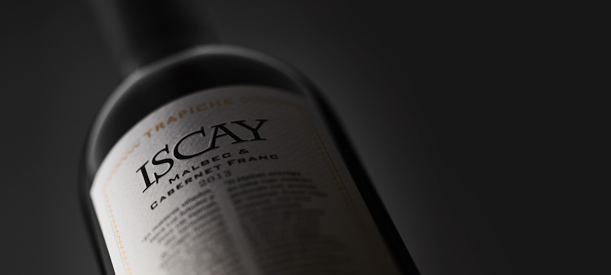
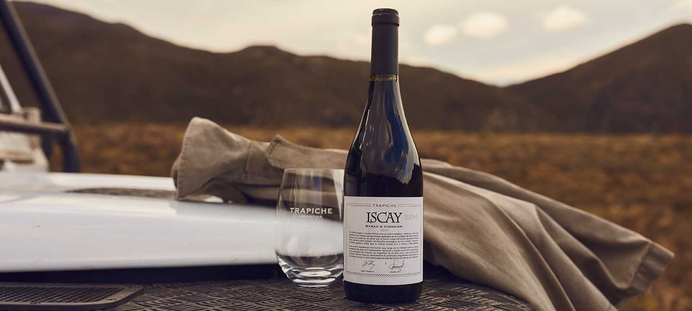
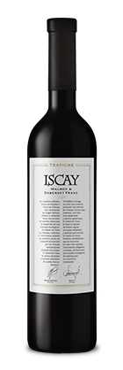
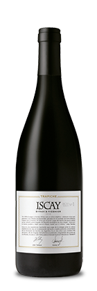

Iscay


Iscay representa la unión de dos componentes: la viticultura, como interacción entre el terroir y la vid; y la enología, combinación de Ciencia y Arte. Un vino creado por Marcelo Belmonte, Ingeniero Agrónomo, Daniel Pi y Sergio Casé, enólogo de Trapiche, que juntos dan origen a este excepcional ejemplar argentino, ícono de Trapiche. Un Blend elaborado a partir de dos variedades de uva para obtener el mejor corte y así, lograr el vino más selecto.

